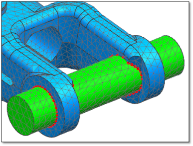

使用重复节点和重复单元命令可检查模型是否包含任何重合单元或节点。重合单元或节点被视为重复项。
检测和合并重复节点的功能在处理以下模型时特别有用：
装配模型。
包含多个网格的模型。
如果尝试解算包含重合节点的模型，则在解算过程中可能会产生奇异性或发生其他刚体运动错误。
还可以使用重复节点命令合并重合节点，以连结装配 FEM 中的相邻组件。
使用重复节点对话框中的选项可检测及合并重复的节点。软件只合并类型相同的节点。例如，软件不会将中节点与结束节点合并。
下图为一个示例，展示重复节点命令如何以图形方式表示重复节点的位置。
|

|
软件合并节点时，使用以下一组规则来确定哪个节点要合并，哪个节点要保留。
注释：软件不能合并已连接到超级单元的节点。
在装配 FEM 中，节点事例优先于装配级的节点。
几何体上定义的节点优先于手动创建的节点或与手动创建的单元关联的节点。
多边形几何体上定义的节点优先于线框几何体上定义的节点。
网格点位置上创建的节点优先于与网格点几何体相关的节点。
使用重复单元对话框中的选项可检测和删除重复单元。软件会评估具有相同拓扑的所有单元（例如 1D、2D、3D）。这意味着，例如，当 Nastran CBEAM 单元和 2 节点的 RBE2 单元存在于同一位置并使用相同节点对来定义其连接时，软件会将其视为重复单元。
根据您在重复单元对话框中选择的显示设置，如果模型包含重复单元，则软件会：
在图形窗口中临时以紫红色高亮显示重复单元。
在信息窗口中列出所有重复单元和共用（顶点）节点的标签。
将所有重复单元放入仿真导航器中的一个输出组。
例如，当模型包含多个 1D 连接时，重复单元命令会很有作用。在求解之前，可以验证这些 1D 连接是否已适当定义。
例如，在 Nastran 环境中，一个 CELAS1 单元用两个节点来定义，每个节点具有一个自由度。如果连接两个不同组件，它们用带有 CELAS1 单元的体单元来进行网格划分，则需要在同一组节点上定义三个 CELAS1 单元，以完全定义连接。在下图中，重复单元选项用于在大型装配 FEM 中标识多个重合的 CELAS1 单元。
如果软件标识任何重复单元，则可以选择删除这些单元中的一个。例如，在重复单元对话框中，可以使用删除设置组中的首选项列表来指定是希望软件保留具有较高还是较低标签 (ID) 的单元。